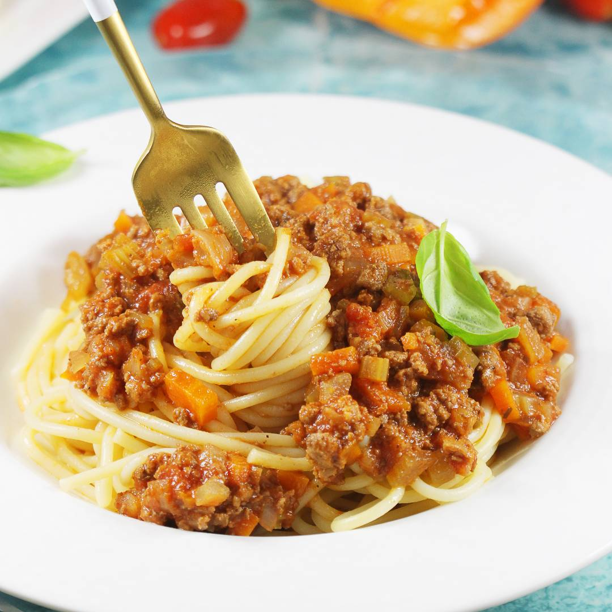

Spaghetti-Bolognese
Aby zrobić pyszne spaghetti najważniejsze jest dobre mięso wołowe z odrobiną wieprzowiny, świeże warzywa,
wysokiej jakości makaron oraz dodatki.
Czas przygotowania: 1 godzina
Czas duszenia: 2 godziny
Liczba porcji: 3160 gramów dania
Kaloryczność kcal: 140 w 100 gramach dania
Składniki
- 300 mlpassaty pomidorowej
- 300 gmielonej wołowiny
- 300 gmakaronu spaghetti
- 30 gtartego parmezanu
- 1 łyżka koncentratu pomidorowego
- 1 ząbek czosnku
- 1 mała cebula
- 0.5 łyżeczki suszonego tymianku
- 0.5 łyżeczki suszonego oregano
- oliwa z oliwek
- sól, pieprz
- świeża bazylia
Sposób Przygotowania
- 1. Na głębokiej patelni rozgrzej około 2 łyżki oliwy z oliwek.
- 2. Na rozgrzaną patelnię wrzuć czosnek i cebulę, a po chwili dodaj mięso, rozdrabniaj je np.
widelcem,
tak aby nie powstały grube mięsne grudki.
- 3. Do mięsa dodaj zioła oraz koncentrat. Całość podgrzewaj przez chwilę, dodaj passatę (przecier
pomidorowy), gotuj na małym ogniu około 30 minut.
- 4. Makaron ugotuj al dente, podawaj go z sosem, serem, i bazylią.